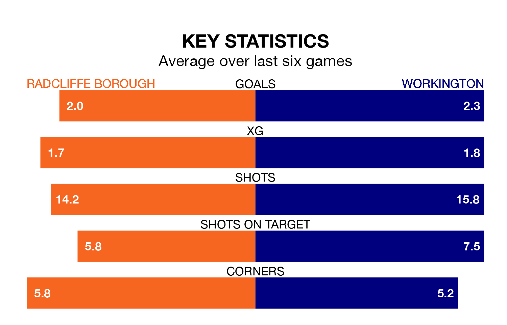

Saturday's match between Radcliffe Borough and Workington promises to be one for the neutrals, as two of Northern Premier League's most free-scoring sides go head-to-head.
Ahead of the game at the Stainton Park Stadium, the Boro and Workington sit top and joint-second in the goal-scoring charts, with 59 and 51 goals respectively.
Radcliffe are top of the table after 21 games, of which they have won 16 and lost five, earning 48 points.
Workington are 14 places behind Borough in 15th, with eight wins and eight draws putting them on 32 points.
The Boro are in mixed form in Northern Premier League, with three wins and three losses from their last six games.
With a win and four draws over that period, the away team's form is slightly worse – they have taken seven points from 18, compared to the hosts' nine.
Radcliffe's last match was on December 26, a 3-0 win against Bradford Park Avenue.
Workington drew 2-2 with Bamber Bridge last time out, on Monday.
Updated: 12:57, 02/01/24